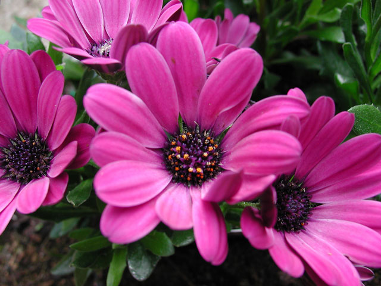
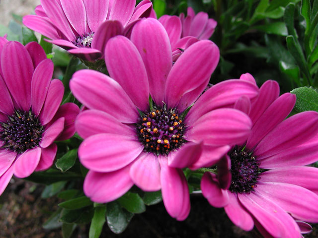

Mums
Color Explosion with Bright Fall Bloomers
Plant Overview
Garden Mums are a fall tradition in Texas and no wonder! Few plants put on such a spectacular show! Big blooming Mums in almost every color in the rainbow and they make an instant impact in any garden. Use them in garden beds, containers on the patio, or as showy border plants.
Plant Details
| Plant Habit or Use: | Showy Flowers |
| Exposure: | Full to Partial Sun |
| Flower Color: | Red, Pink, White, Yellow, Orange, Rust, Purple |
| Blooming Period: | Fall |
| Height: | 1 to 2 feet |
| Width: | 12 to 20 inches |
| Plant Character: | Perennial |
| Water Requirements: | Medium |
| Zone: | 3-9 |
| Uses: | Beds, Borders, Container, Cut Flowers |
Photo Gallery


 
